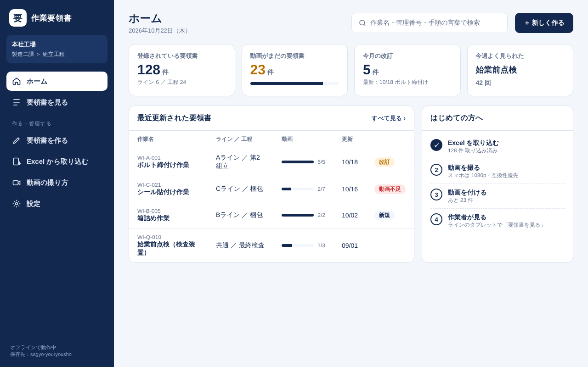
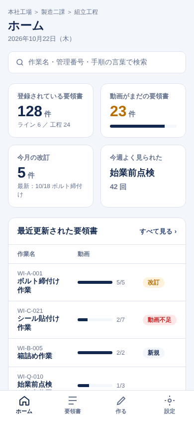
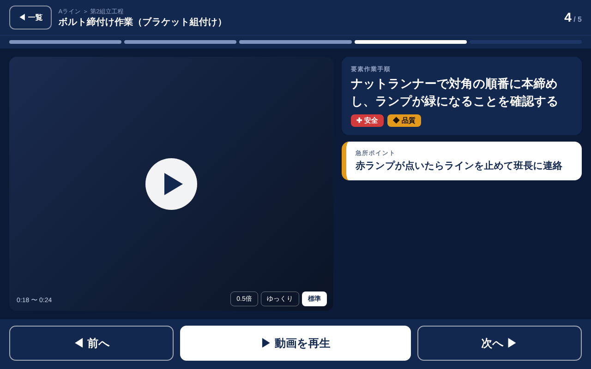
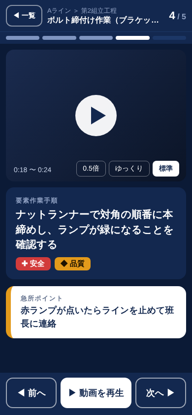
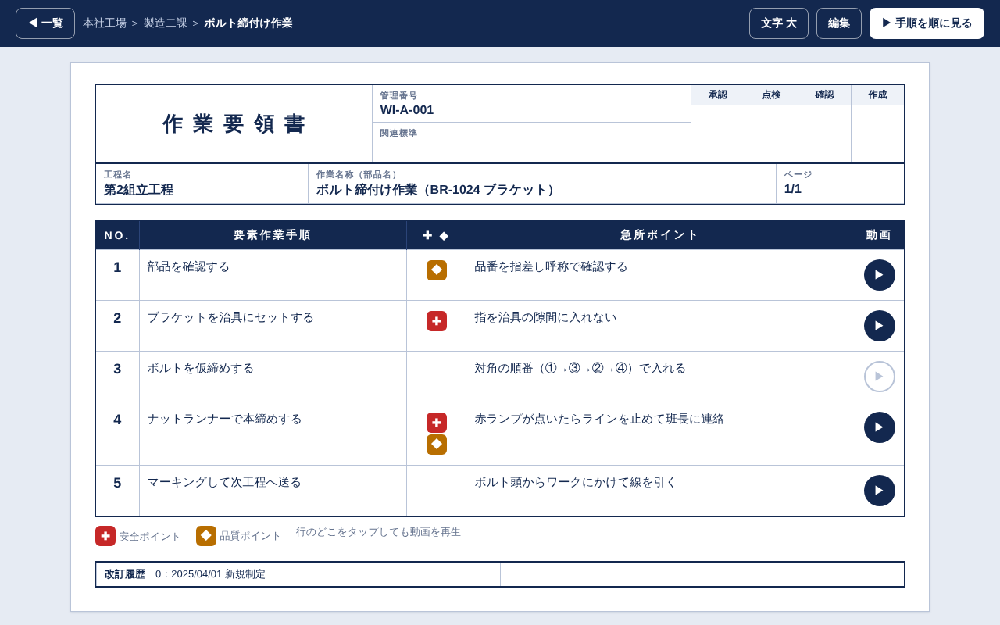
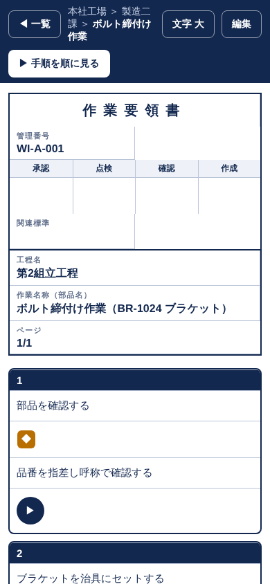

案A 業務アプリ型作る・管理する方（PC）向け


- 左のメニューで、どの画面にもすぐ移れる（スマホは下のタブ）
- 登録件数・動画がまだの件数・改訂などが一目で分かる
- 一般的な業務ソフトと同じ作りなので、PC に慣れた人は迷わない
- ラインのタブレットで作業者が使うには、文字やボタンが小さめ
案B 現場タブレット型作業をする方向け


- 1 画面に 1 手順。文字・ボタンが大きく、手袋でも押しやすい
- 何番目の手順か（4 / 5）と進み具合が上に出る
- ✚安全・◆品質と急所ポイントが目立つ
- 全体を一覧で見るのには向かない（一覧は別の画面）
案C 帳票型社内フォーマットの見た目そのまま


- 今の Excel の要領書と同じ見た目なので、誰でもすぐ分かる
- 印刷してもそのまま紙の要領書として使える
- 手順・急所の行をタップすると動画（右の ▶）
- スマホの小さい画面では、ヘッダの部分が長くなる
A ＋ B ＋ C の組み合わせ
使う人と場面で、いちばん合う形を使い分けます。
| 画面 | 使う形 | 理由 |
|---|---|---|
| メニュー・作成・取り込み・設定 | 案A（左のメニュー） | 管理する人が PC で迷わず移動できる |
| 要領書を開いたとき | 案C（帳票型） | 今の Excel と同じ見た目で、印刷にもそのまま使える |
| 「手順を 1 つずつ見る」 | 案B（タブレット型） | ラインで作業者が見るときに、大きく・押しやすく |